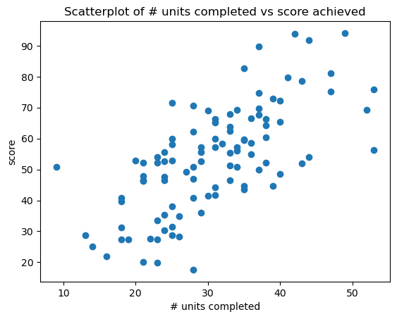
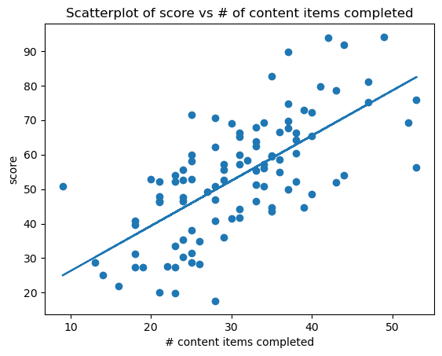
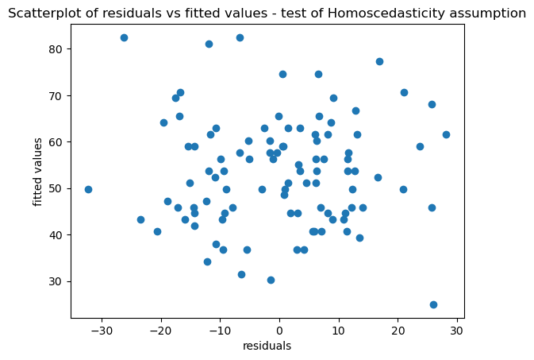

For this project, you’ll get to work as a data analyst alongside the curriculum team at Codecademy to help us improve the learner experience. While this data is simulated, it is similar to real data that we might want to investigate as Codecademy team members!
Finally, a quick note about plotting: in order to prevent plots from getting layered on top of each other, you’ll need to show then clear each plot before creating the next one using the following code:
plt.show() # Show the plot
plt.clf() # Clear the plot
Model the relationship between quiz score and number of completed content items
# Load librariesimport pandas as pdimport numpy as npimport matplotlib.pyplot as pltimport seaborn as snsimport statsmodels.api as sm# Read in the datacodecademy = pd.read_csv('data/codecademy.csv')# Print the first five rowsprint(codecademy.head())
score completed lesson
0 82.7 35 Lesson A
1 65.2 31 Lesson A
2 55.3 33 Lesson A
3 28.8 25 Lesson B
4 31.2 18 Lesson B
Let’s investigate the relationship between completed content items and score.
# Plot a scatter plot of score (y-axis) against completed (x-axis) to see the relationship between quiz score and number of completed content items.plt.scatter(codecademy.completed, codecademy.score)plt.title('Scatterplot of # units completed vs score achieved')plt.xlabel('# units completed')plt.ylabel('score')plt.show()

The relationship between the two variables certainly does appear to be linear.
# Create and fit a linear regression model that predicts score using completed as the predictormodel_completed = sm.OLS.from_formula('score ~ completed', codecademy)results = model_completed.fit()print(results.params)
print(f'The baseline score without completion of content items is predicted to be {results.params[0]}. For each additional content item completed the score is predicted to improve by {results.params[1]}.')
The baseline score without completion of content items is predicted to be 13.21411302117958. For each additional content item completed the score is predicted to improve by 1.306825592807168.
# Plot the same scatter plot that you made earlier (with score on the y-axis and completed on the x-axis), but this time add the regression line on top of the plotpredicted_score = results.params[1] * codecademy.completed + results.params[0]
# Plot the scatter plot with the line on topplt.scatter(codecademy.completed, codecademy.score)plt.plot(codecademy.completed, predicted_score)plt.title('Scatterplot of score vs # of content items completed')plt.xlabel('# content items completed')plt.ylabel('score')# Show then clear plotplt.show()plt.clf()

<Figure size 640x480 with 0 Axes>
# calculate the predicted quiz score for a learner who has previously completed 20 other content itemsunseen_data =20pred_20_completed = results.predict({'completed': unseen_data})print(pred_20_completed)
0 39.350625
dtype: float64
# Calculate the fitted valuesfitted_values = results.predict(codecademy)print(fitted_values.head())
The distribution of residuals is approximately normal.
# Check homoscedasticity assumptionplt.scatter(residuals,fitted_values)plt.title('Scatterplot of residuals vs fitted values - test of Homoscedasticity assumption')plt.xlabel('residuals')plt.ylabel('fitted values')plt.show()plt.clf()

<Figure size 640x480 with 0 Axes>
As we can see above the scatterplot can be described as a random splatter of points, centered around y=0 and so the Homoscedasticity assumption is also validated.
Do learners who take lesson A or B perform better on the quiz?
Let’s now turn our attention to the lessons column to see if learners who took different lessons scored differently on the quiz.
Use sns.boxplot to create a boxplot of score (y-variable) for each lesson (x-variable) to see the relationship between quiz score and which lesson the learner completed immediately before taking the quiz
As we can see from the above plot Lesson A appears to do a better job of preparing students for the quiz as the mean score is around 60 compared with 50 for those who took Lesson B.
# Create and fit a linear regression model that predicts score using lesson as the predictormodel_lesson = sm.OLS.from_formula('score ~ lesson', codecademy)results = model_lesson.fit()print(results.params)
We can interpret this as the average score for someone who took Lesson A is 59.22, whilst for someone who took Lesson B, the average score is 11.642 less (i.e 47.578). We can verify this below :
# Calculate and print the group means and mean difference (for comparison)print(codecademy.groupby('lesson').mean())
score completed
lesson
Lesson A 59.220 30.18
Lesson B 47.578 31.32
# Calculate and print the group means (for comparison)mean_score_A = np.mean(codecademy.score[codecademy.lesson =='Lesson A'])print('Mean score (Lesson A): ', mean_score_A)
Mean score (Lesson A): 59.220000000000006
# Calculate and print the group means (for comparison)mean_score_B = np.mean(codecademy.score[codecademy.lesson =='Lesson B'])print('Mean score (Lesson B): ', mean_score_B)
Finally, we can extend our visualization of the relationships between score and units completed, by using colour to introduce a third variable (lesson) using hue=“lesson” :
The above graph clearly highlights the benefit of completing Lesson A over Lesson B prior to taking the quizz, and also shows the general positive linear trend of completing units on overall score obtained.